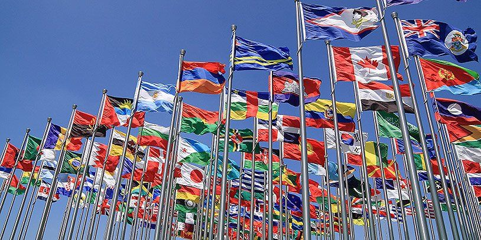
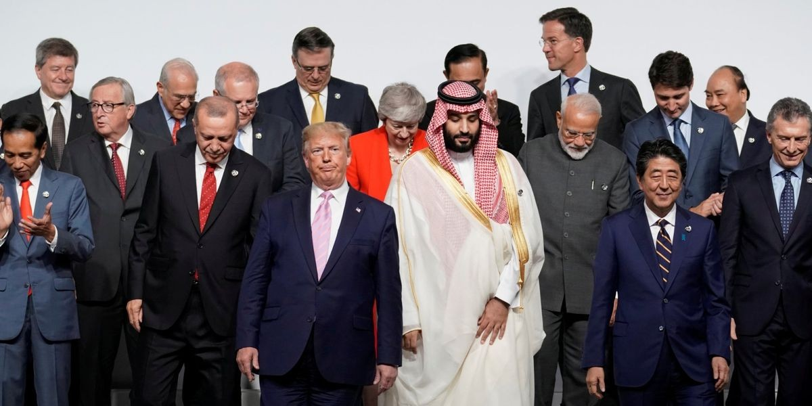
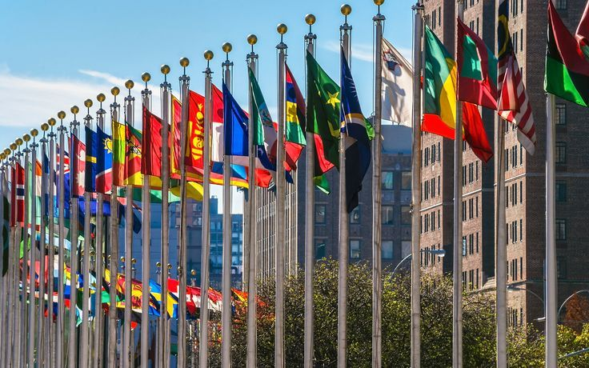
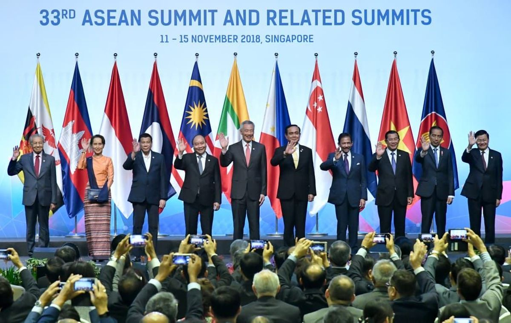
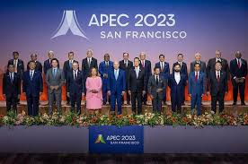
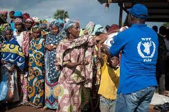

Kerjasama Multilateral
Kerjasama multilateral adalah bentuk kerjasama yang melibatkan lebih dari dua negara dalam organisasi internasional untuk mencapai tujuan bersama di bidang ekonomi, politik, sosial, budaya, pendidikan, keamanan, dan lingkungan.


Ciri-Ciri Kerjasama Multilateral
- Melibatkan lebih dari dua negara.
- Melalui organisasi internasional (PBB, WHO, ASEAN).
- Bersifat mengikat melalui perjanjian internasional.
- Memiliki pertemuan rutin: Sidang, Forum, KTT.

Bentuk Kerjasama Multilateral
- Kerjasama Bilateral (2 negara).
- Kerjasama Regional (1 kawasan).
- Kerjasama Multilateral (organisasi dunia).
Contoh Kerjasama Multilateral

Perjanjian Multilateral
- Protokol Kyoto (Perubahan Iklim)
- Konvensi Jenewa (Hukum Perang)
- AFTA (Perdagangan Bebas ASEAN)

Forum Multilateral
- APEC (Asia-Pacific Economic Cooperation)
- World Economic Forum (WEF)
- Gerakan Non-Blok (GNB)

Program Kerjasama Multilateral
- UNAIDS (Pemberantasan AIDS)
- World Food Programme (WFP)
- UNEP (Program Lingkungan PBB)